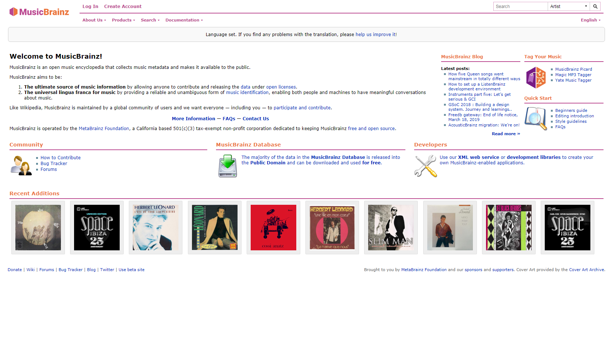
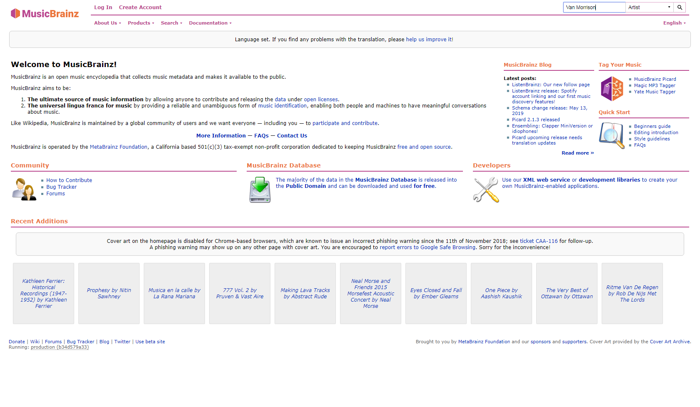
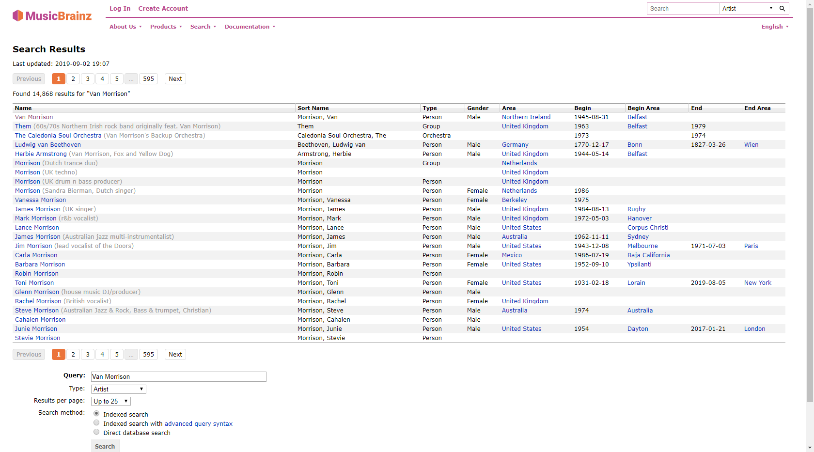
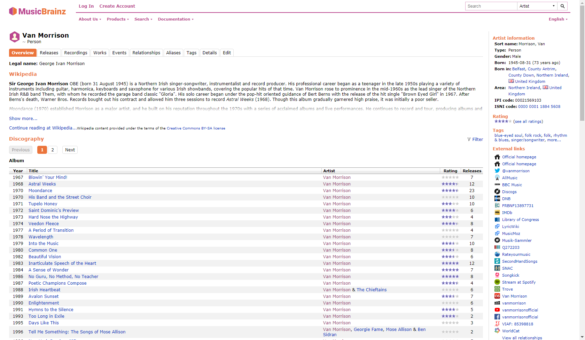

Website testing using table template and BrowserTest
On this page we test retrieving record details using MusicBrainz.
This test continues where StoryboardTest left off and combines it with TableTemplateTest.
The configuration of Selenium (i.e. which browser to use) and starting the browser session is done in the SuiteSetup[?]. Which allows this configuration to be shared between tests. Closing the browser is done in SuiteTearDown, which happens after all tests are completed.
First we go to the Discography page for Van Morrison.
| storyboard | browser test | |||
| open | https://musicbrainz.org/set-language/en |  | ||
| enter | Van Morrison | as | Search |  |
| press | enter |  | ||
| click | Van Morrison |  | ||
Then we check some entries.
| table template | album details | |||||
| $year= | value of | Year | in row where | Title | is | @{album} |
| $releases= | value of | Releases | in row where | Title | is | @{album} |
| album details | |||||||||||||||||||||||
| album | year? | releases? | |||||||||||||||||||||
| Astral Weeks | 1968 | [13] expected [12] | |||||||||||||||||||||
| |||||||||||||||||||||||
| Moondance | 1970 | 23 | |||||||||||||||||||||
| |||||||||||||||||||||||